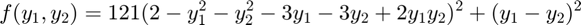

Optimization Assignment 1
Instructions are to find the minima of 
Contents
Populating Function
clc; zmwidth=2; % Zoom width % f = @Ackley; f = @(x) 121*(2 - x(1)^2 - x(2)^2 - 3*x(1) - 3*x(2) + 2*x(1)*x(2))^2 + (x(1)-x(2))^2; x = -3:0.1:3; y = x; z = zeros(length(x)); for i=1:length(x) for j=1:length(y), z(i,j)=f([x(i) y(j)]); end end
Visualize Function
h1 = figure('Position',[314 27 1113 744]); subplot(2,2,1); surf(x,y,z); title('Gradient Descent - Surf'); hold on subplot(2,2,2); contour(x,y,z,25); title('Gradient Descent - Contour'); axis equal; hold on subplot(2,2,3); surf(x,y,z); title('Newtons - Surf'); hold on subplot(2,2,4); contour(x,y,z,25); title('Newtons - Contour'); axis equal; hold on
Gradient Descent
Performing gradient descent
alpha = 0.0001; % Gradient Descent learn rate delta = 0.001; % Gradient step size, dt niter = 100; % Number of Iterations tol = 1e-6; % Tolerance on gradient abstol = 1e-6; % Tolerance on function Value s = [1.3 1.5]; % Initialization i=0; absnorm=inf; gnorm=inf; while (i<=niter && gnorm>tol && absnorm>abstol) grad = gradAnon(s,delta,f); s0 = s; s = s - alpha*grad; gnorm = norm(gradAnon(s,delta,f)); absnorm = norm(s-s0); subplot(2,2,1); plot3(s(1),s(2),f(s),'ro--','MarkerFaceColor','r','MarkerEdgeColor','w'); subplot(2,2,2); plot([s0(1) s(1)],[s0(2) s(2)],'ro--','MarkerEdgeColor','k','MarkerFaceColor','r', 'MarkerSize',10); zm = [s-zmwidth;s+zmwidth]; xlim(zm(:,1)); ylim(zm(:,2)); pause(0.25); i=i+1; end display(sprintf('Gradient Descent run for %d iterations',niter)); display(sprintf('GD minimum is %.5f at x=%.2f and y=%.2f',f(s),s(1),s(2)));
Gradient Descent run for 100 iterations GD minimum is 0.00109 at x=0.32 and y=0.35
Newton's Method
Use Newton's method on function
niter = 50; delta = 0.001; s = [1.3 1.5]; i=0; absnorm=inf; gnorm=inf; while (i<niter && gnorm>tol && absnorm>abstol) s0 = s; hess = hessAnon(s,delta,f); grad = gradAnon(s,delta,f); s = s - (hess\grad')'; absnorm = norm(s-s0); gnorm = norm(grad); subplot(2,2,3); plot3(s(1),s(2),f(s),'go--','MarkerEdgeColor','w','MarkerFaceColor','g'); subplot(2,2,4); plot([s0(1) s(1)],[s0(2) s(2)],'go--','MarkerEdgeColor','k','MarkerFaceColor','g','MarkerSize',10); zm = [s-zmwidth;s+zmwidth]; xlim(zm(:,1)); ylim(zm(:,2)); pause(0.25); end display(sprintf('Newtons Method run for %d iterations',niter)); display(sprintf('NM minimum is %.5f at x=%.2f and y=%.2f',f(s),s(1),s(2)));
Newtons Method run for 50 iterations NM minimum is 0.00027 at x=0.33 and y=0.33